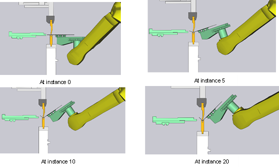
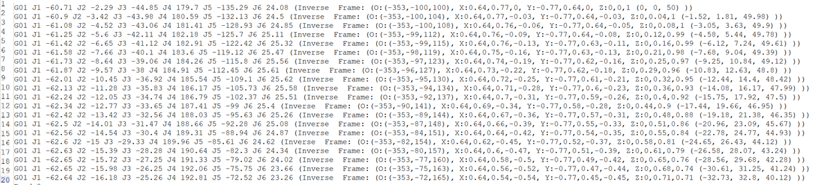
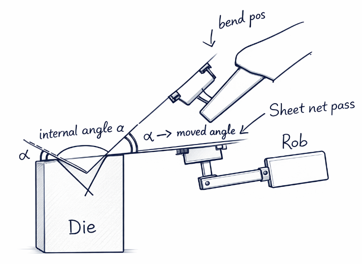

Synchronous Bending
This section describes the method used to synchronize the robot bending motion with the RAM/Sheet motion during bend. The synchronisation is achieved by predetermining the positions of the robot during bending with respect to position moved by the ram from pinch point and commanding the robot dynamically to move to the position where its expected to be for the current ram position.
Synchro Bending Basic Concept
The objective of syncro bending is to support the sheet during the bending process, to achieve this the robot should match/synchronize with the bending motion of the sheet metal.
The Offline programming i.e, FluxRobot CAM software gives the advantage of determining the motion of the sheet during bend and the robots pose which corresponds to the sheet motion at a specific instance of bend. So basically the entire motion of the sheet metal during bend is divided into instances based on the total distance travelled by the Bending Beam from Pinch point to the LDP point(start to completion of bend) divided by the number of instances required.
For example, Lets assume the distance between Pinch Point and LDP is 5.12 mm and number of instances required is 20, then
5.12 --------- = 0.256 mm 20
Now, the robot’s pose is computed for every 0.256mm movement of the Bending beam which bends the sheet. As a result we will have 20 robot poses for the bend each corresponding to the distance moved by the Bending beam which intern corresponds to the angular movement of the sheet metal during bend.

So, this can be used to command the robot in real time from RA controller, to be at a specific pose at a specific instance. The Flux offline programming software out put all the pose values for the required instances.
These values are loaded in to the FANUC robot tp program and can be dynamically commanded based on the position of the Bending Beam.

45: !Dynamic motion cmd for sync ;
46:L PR[R[35]] R[40]deg/sec CNT100 ACC80 Skip,LBL[2] ;This code block commands the robot dynamically based on the Bending Beam position, for example when Bending Beam moves 0.256 mm from Pinch point towards LDP as in above mentioned example the R[35] register receives “1” meaning to command the robot to move to pose one corresponding to the Beam motion and so on until “20”.
Velocity Factor of Bending Beam
The next challenge is, synchronous motion dependence on the velocity of the Bending Beam. The robot has to follow the sheet with respect to the bending velocity.
With our setup the bending speed can be varied from 5mm/s to 10mm/s. And we can achieve good synchronous motion in all velocity ranges. This is achieved by using the advantage of FANUC robots angular velocity command.
During the bend the sheet metal moves with an angular velocity with respect to the vertical motion velocity of the bending beam. This can be determined and used as the command value for the robot motion during bend enabling the robot to always move in same velocity of the motion of the sheet metal during bend.
The angular velocity is calculated by following method,

-
So, α = innerangle - 180/2 this will be the angle moved by sheet. From the machine controller we can get the time taken to reach the angle.
-
Now, Angular velocity = α/time taken.
-
The FANUC robot has a feature to use angular velocity as the motion command velocity parameter.
45: !Dynamic motion cmd for sync ; 46:L PR[R[35]] R[40]deg/sec CNT100 ACC80 Skip,LBL[2] ; -
This means that the robot tcp is now commanded at with the calculated angular velocity. Like the previous approach the robot lead motion can be controlled by adjusting the filter value in the controller which affects the rate at which the robot is commanded.
-
This method provides a control over the velocity of both robot and sheet movement so ensuring good synchronisation.
-
We have observed good synchronisation results with this method. The motion can be further improved by having dynamic angular velocity command, matching the acceleration of the ram movement.